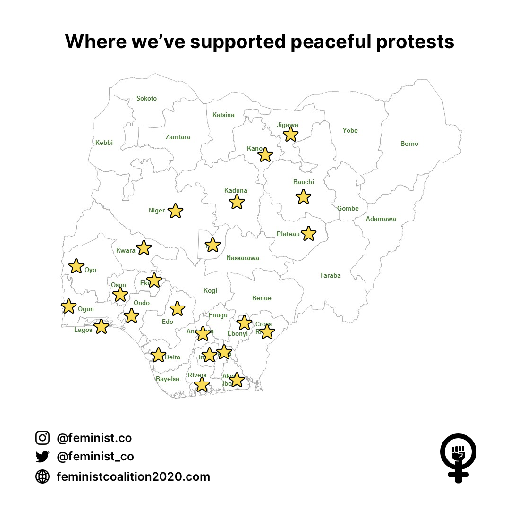
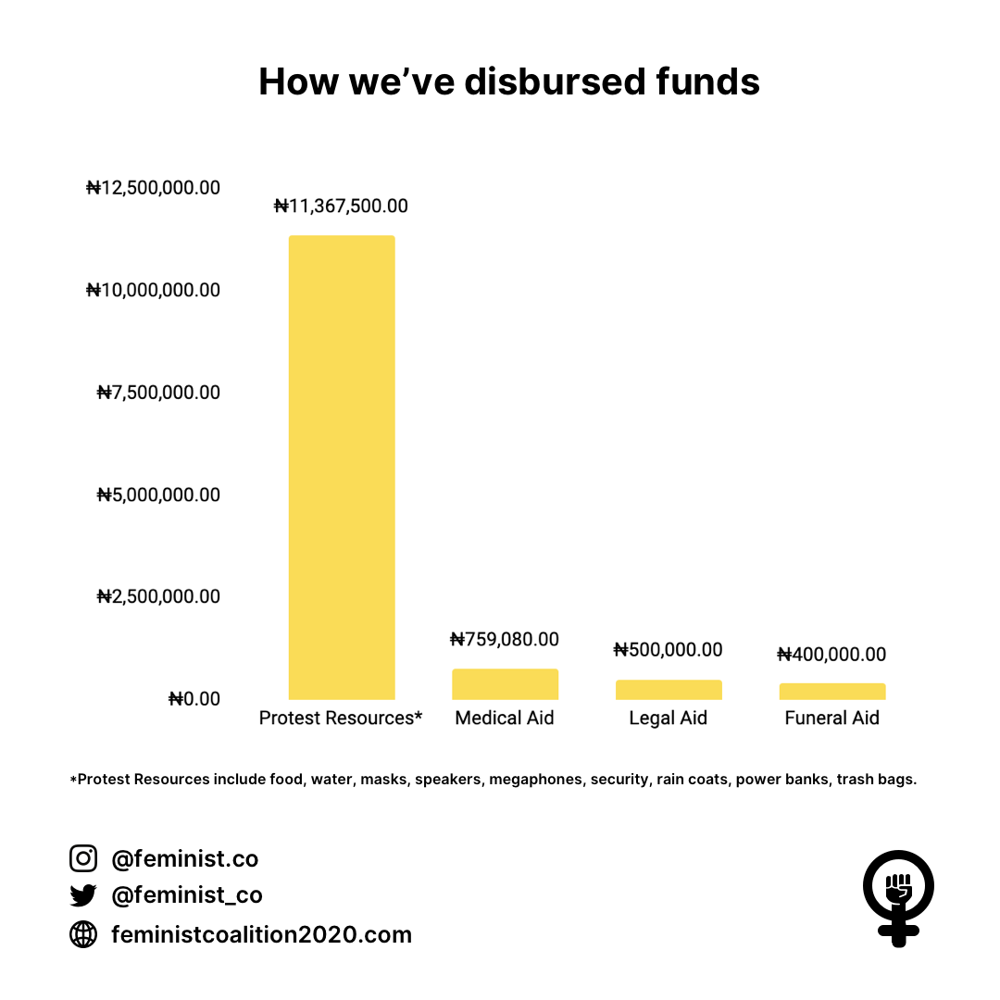

Progress Report - October 15th, 2020
The feminist coalition is a group of young Nigerian feminists formed in July 2020 with a mission to champion equality for women in Nigerian society with a core focus on education, financial freedom and representation in public office. We are fighting injustice through peaceful protests, fundraising, and social media organisation. We have a vision for a Nigeria where equality for all people is a reality in our laws and everyday lives.
Over the past week, there has been a peaceful uprising by the Nigerian youth, demanding for the disbandment of the notorious SARS unit, and the end to police brutality and an unjust judicial system. Like everyone else, we decided to play our part and help fight the injustice through fundraising in order to sustain the peaceful protests and ensure the safety of Nigerians exercising their civic rights - by providing food, water and other refreshments, masks, medical aid, and legal aid for protesters.

Our initial plan has been to Strategise (find the best ways to keep Nigerians safe during this period, while using their voices), Organise (to encourage Nigerians to exercise their constitutional rights) and Sustain (support the peaceful #EndSars protests until the demands of Nigerian youth are met). We have sustained this so far through an unwavering team of women, fundraising efforts, a network of volunteer lawyers, business owners and well-meaning Nigerians.
Here is a breakdown of what has happened since then:
We have raised a total sum of :
NGN 62,643,663.05
USD 11,474.34
CAD 5,595.89
GBP 5,733.49
EUR 875.42
GHS 1,256.70
KES 53,016.60
BTC 1.28827988
Through the generosity of well-meaning people and concerned Nigerians who want their voices to be heard and their demands to be met.
With these funds, we have supported 100 peaceful protests in 25 states*, paid NGN 759,080 in medical bills for injured protesters, donated NGN 400,000 to the families of victims murdered by police officers while protesting peacefully, paid NGN 500,000 in legal aid and spent N 11,367,500 on supplies including food, water, mask among other things for the peaceful protesters.

For many years, there has been a public outcry from the Nigerian youth regarding the predatory harassment, intimidation, physical and sexual violence from the SARS unit of the Nigerian police force. For many years, the Nigerian government has promised the reform of this unit, but their inaction has led to a reign of terror that has resulted in the loss of the lives of many innocent Nigerians.
SARS operates with impunity; beating, detaining, robbing, raping and killing at will, with a marked increase in brutalization as the years have passed, to the continued silence of our leaders and elders.
Despite the assurance of changes and the announcement of the disbandment of SARS by the relevant authorities, the peaceful protests have continued to be derailed by marked police violence and unlawful arrests, and individuals continue to report harassment by SARS members still patrolling the streets.
Since the protests began more than 70 people were arrested, simply for peacefully protesting. Thanks to our team of volunteer rockstar lawyers around the country we have been able to combine efforts in getting most of them released.
It is important to note that we control neither the protests nor the youth. It is not our place. But as long as the protests continue, we will STAND WITH Nigerian youth, and as a body we demand the complete disbandment of SARS in reality (not a rebrand as SWAT), and a total police reform to end to the predatory harassment, intimidation and physical & sexual violence faced by millions of Nigerian men and women. We demand a system that is fair, transparent, and accountable to ALL Nigerian citizens.
We do not organise protests. Our role in the #EndSARS fight is to fund the safety and comfort of peaceful Nigerian protesters exercising their constitutional rights.
It is time to #ENDSARS for good.